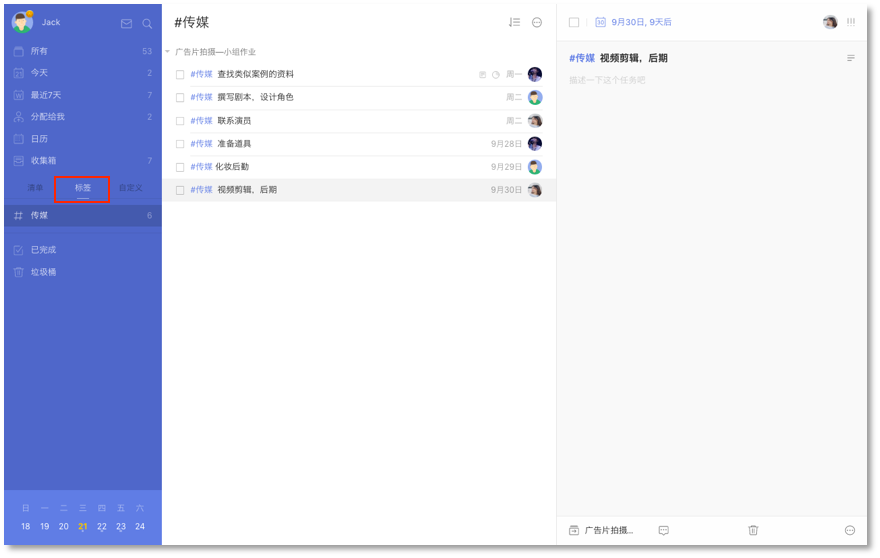
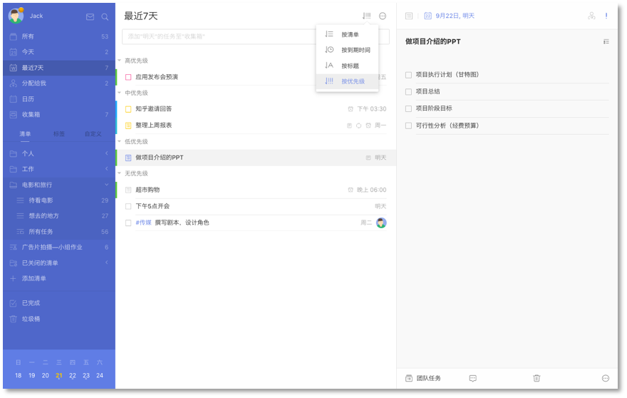

筛选
滴答清单支持您通过以下方式对自己的任务进行筛选。
标签
您可以对任务设置不同的标签，标签选项卡显示在清单栏。
有未完成任务的标签会显示在标签选项卡下，点击某个标签，带有该标签的任务将会汇总显示在中间的任务栏页面。

优先级
您也可以通过优先级对任务进行筛选。
对任务标注优先级，然后您可以在【今天】【明天】【最近七天】等智能清单中选择【按优先级排序】，从而筛选出重要程度高的任务。
当您任务较多时，对任务标注优先级，会更好的帮助您分出任务的轻重缓急。

自定义智能清单
若以上两种简单筛选不能满足您的需要，您可以使用自定义智能清单。
点击左上角头像-【设置】-【智能清单】中选择开启自定义智能清单，然后就会在清单栏中出现【自定义】。
在【自定义】选项卡下选择【添加智能清单】，就可以新建一个智能清单了。目前支持【清单】【标签】【日期】【优先级】【分配给】五个条件，可以根据需要自行设定，从而将符合要求的任务筛选出来。
当前没有带标签的任务时，【标签】筛选项不显示；
当前没有共享清单，则【分配给】筛选项不显示。